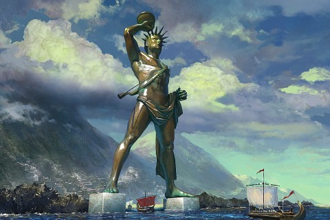

Rodo kolosas – milžiniška graikų Saulės dievo Helijo skulptūra, stovėjusi Rodo saloje III a. pr. m. e., vienas iš septynių pasaulio stebuklų. Po Aleksandro Didžiojo mirties 323 m. pr. m. e. imperiją pasidalijo jo generolai (diadochai). Egiptas atiteko Ptolemėjui, kuris sudarė sąjungą su Rodo sala ir sėkmingai kontroliavo prekybą Viduržemio jūroje. Kito Aleksandro generolo – Antigono Monoftalmo – sūnus Demetrijas Poliorketas 305 m. pr. m. e. užpuolė Rodą. Bet miestą supo stiprūs įtvirtinimai, todėl Demetrijas liepė pagaminti didelius apgulties bokštus. Pirmojo bokšto konstrukcijos buvo sukrautos į šešis laivus, bet šie nuskendo audros metu. Tada Demetrijo nurodymu buvo pastatytas dar didesnis bokštas, pramintas Helepoliu (Helepolis), bet Rodo gynėjai užtvindė žemę prieš gynybinę sieną, ir bokštas negalėjo būti pristumtas pakankamai arti. 305 m. pr. m. e. Ptolemėjo pasiųsta kariuomenė atplaukė Rodui į pagalbą, ir Demetrijas buvo priverstas skubiai atsitraukti, metęs didžiumą apgulties įrangos. Pergalei pažymėti Rodo gyventojai nutarė pastatyti milžinišką salos globėjo – Saulės dievo Helijo – skulptūrą, šį darbą pavesdami Charesui – jau pagarsėjusiam skulptoriui, Lisipo mokiniui. Darbui finansuoti buvo nutarta parduoti Demetrijo paliktus apgulties įrenginius.
©Matthew's studio